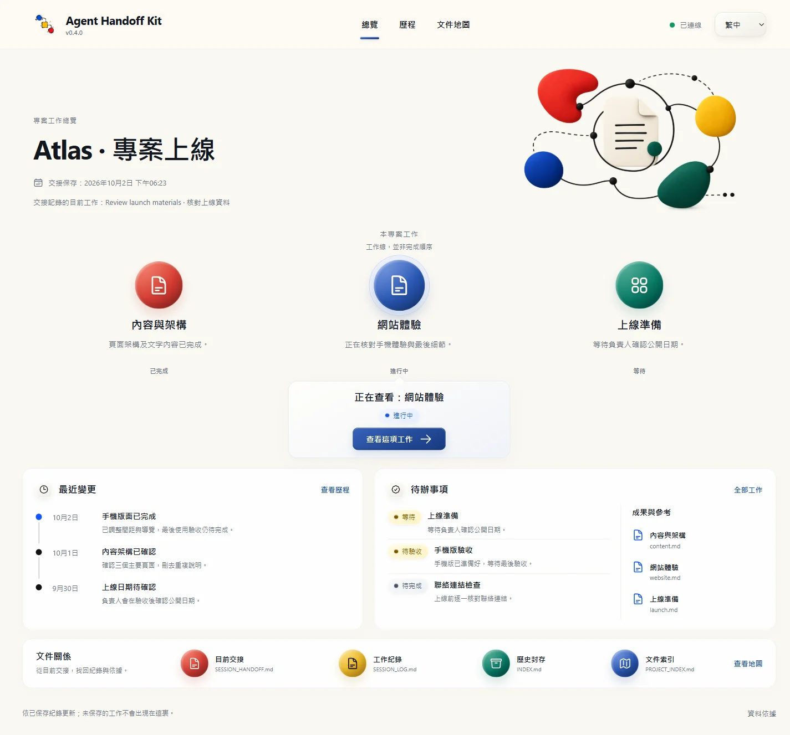
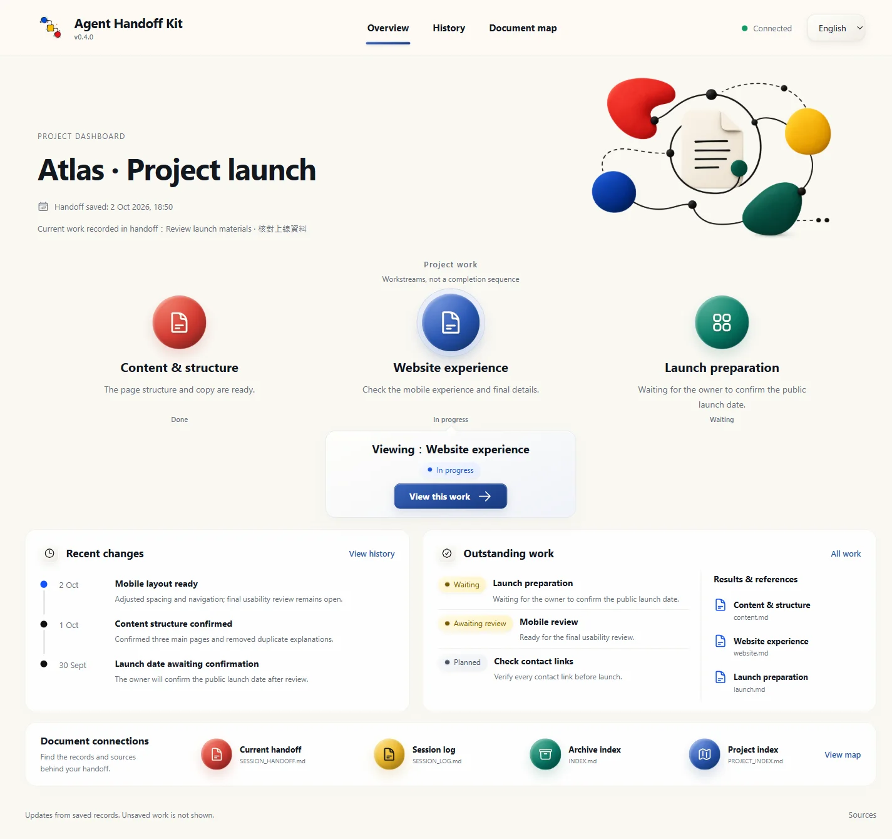

接回上次工作
開工
/handoff-kit-startAI 先完整讀取交接，說明做到哪裏、還欠甚麼，再等你提出任務。第一次使用而尚未有目標時，會加上簡短引導。
想立即繼續，可在指令後加「繼續完成目前目標」。交接未讀齊或有重要矛盾時，AI 必須說明，不能當作已接上。
/handoff-kit-start 繼續完成目前目標指令只是入口。這套工具還會替你保留工作脈絡、整理文件關係，以及按任務使用合適的工作規則。你說需求、提供回饋；AI 負責讀取、執行、檢查和保存。
目前目標、你的修正、已完成與未完事項，放在交接中；重要選擇及原因留下紀錄；舊工作紀錄按需要整理，日後仍可追查。AI 開工先讀齊交接，做任務時才讀相關資料，不用每次載入所有歷史。未保存的內容不能假裝已記住。
例如你要寫文章、查資料、做網頁或整理文件，直接說目的即可。AI 分別核對讀者與語氣、資料來源、實際程式結果，或文件用途與權限。需要外部工具時先確認可用；未接通不能聲稱已讀取或已寫入。
在專案的 AI 對話輸入指令，不是在終端機。Claude Code、Gemini CLI、Antigravity CLI 用 /；Codex 用 $，也可從 /skills 選取。
接回上次工作
/handoff-kit-startAI 先完整讀取交接，說明做到哪裏、還欠甚麼，再等你提出任務。第一次使用而尚未有目標時，會加上簡短引導。
想立即繼續，可在指令後加「繼續完成目前目標」。交接未讀齊或有重要矛盾時，AI 必須說明，不能當作已接上。
/handoff-kit-start 繼續完成目前目標看專案全貌
/handoff-kit-progress開啟這個專案的 Dashboard：目前工作、未完事項、歷程，以及重要文件的關係。
紀錄保存後，頁面會自動更新；未保存的對話不會出現。查看頁面不會改動專案。
準備結束這次對話
/handoff-kit-closeAI 保存已做、未做、遇到的問題及下次接續位置，檢查後告訴你交接是否已保存。
工作未完成也可以收工。「已保存」不等於整個專案完成；收工不會另外授權上傳或發布。
第一次用，想有人帶路
/handoff-kit-onboardAI 用你的語言介紹用法，按你想做的事帶你開始；只問真正缺少的資料。
這是使用教學，不會重新安裝，也不會把未完成工作標為完成。
忘了用哪個指令
/handoff-kit-help列出常用指令和用途，方便你選擇。
只看選單不會開始工作或檢查專案。你仍可直接用日常話提出任務。
讓下次 AI 找得到重要文件
/handoff-kit-align在指令後加文件名稱，AI 會檢查它是否已登記、何時要讀，以及有沒有重複或漏接。
例如「handoff-kit-align docs/plan.md」。沒有指定文件時，先列出值得檢查的文件與建議；你確認修改範圍後才改。
/handoff-kit-align docs/plan.md希望以後都照這樣做
/handoff-kit-remember在指令後寫下要求，AI 會放進這個專案合適的位置，讓下次處理相關工作時讀得到。
例如「handoff-kit-remember 以後回覆請用繁體中文」。沒有說明要求時，AI 會先問清楚；不要把密碼或金鑰當作工作要求保存。
/handoff-kit-remember 以後回覆請用繁體中文交接功能出了問題
/handoff-kit-check檢查這個專案的交接工具檔案與指令入口，說明是否缺漏或有問題。
只檢查，不修復、不升級。通過檢查不代表 AI 已讀齊交接，也不代表你的工作已完成。
想用最新正式版
/handoff-kit-update連線檢查官方 npm 下載站；有新版便自動升級這個專案並檢查結果，已是最新版則只檢查。
只在你呼叫時執行，不在背景定時更新。無法連線、版本不明或遇到自訂內容衝突時會停下說明；不強行覆寫，也不降回舊版。
你也可以直接說「開工」「收工」。任務只需用日常話描述，AI 負責補足必要的做法與檢查；有關鍵資料缺漏或需要你取捨才問你。
用 handoff-kit-progress，看現在做到哪裏、還欠甚麼，以及之前怎樣走到這一步。

實際介面截圖；Atlas 是虛構範例。點圖放大，每個專案會顯示自己的紀錄。

AI 保存紀錄後，畫面自動更新，不用刷新。叫 AI 開頁面和保存紀錄會用一些 token；之後查看、篩選和畫面更新不另叫 AI。未保存的工作不會出現。
進度頁用法及常見問題 →在要工作的專案資料夾打開 AI，把下面一句貼進對話。AI 會先確認資料夾，再安裝或升級及檢查，你不用選指令。
請讀取 https://adamchanadam.github.io/agent-handoff-kit/agent-handoff-kit-ai-install.html ，並在這個資料夾安裝或升級 Agent Handoff Kit。
需要能讀寫專案資料夾的 AI 工具及 Node.js 18 以上。普通網頁聊天若不能存取資料夾便不適用；不確定時先請 AI 檢查。已有舊版或 AI 工作文件也用同一句。
先確認 AI 開的是正確專案，再重新開啟專案對話；Gemini CLI 也可用 /commands reload。仍沒有時，把本頁的安裝句交給 AI，讓它檢查或補齊。檔案已安裝不等於工具選單已重新載入；實際可見和可呼叫要在你的工具中確認。
不同工具要開啟同一專案資料夾。換電腦時，先完整帶走專案及交接文件，再用開工指令。這套工具不會自動同步電腦，也不會複製未保存的聊天內容。
AI 會保留你的自訂內容，說明哪裏需要處理，再按你確認的範圍合併。相同檔案不重寫，確認未改過的舊官方入口才會安全更新。遇到中斷，請 AI 按恢復指示處理，不要自己刪除保護檔案或重裝覆蓋。
指令和交接都放在這個專案內。這套工具會拒絕安裝到電腦的共用 AI 設定位置；每個專案要各自安裝。AI 讀到指令的說明，不代表你已要求它執行。
刪除重要資料、上傳、發布或更改權限前，AI 仍須說明影響並取得所需批准。這套工具的檢查不保證 AI 永不出錯；讀取失敗、資料缺漏和未完成的檢查都應明確告訴你。